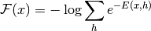

Bases: safire.learning.models.restricted_boltzmann_machine.RestrictedBoltzmannMachine
Computes the free energy of the model.
| Parameters: | visible (theano.tensor.TensorType) – The state of the visible units (either 1/0, or mean - not important). |
|---|---|
| Return type: | theano.tensor.var.TensorVariable |
| Returns: | The free energy of the model, given the visible activation.
Computed as (1) |